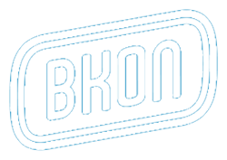

<!DOCTYPE html>
<html>
  <head>
    <title>Lindsey Maddox Makes Websites</title>
    <meta charset="UTF-8">
    <meta name="viewport" content="width=device-width, initial-scale=1">
    <meta name="description" content="">
    <link rel="apple-touch-icon" sizes="180x180" href="/apple-touch-icon.png?v=9BampWPmGp">
    <link rel="icon" type="image/png" sizes="32x32" href="/favicon-32x32.png?v=9BampWPmGp">
    <link rel="icon" type="image/png" sizes="16x16" href="/favicon-16x16.png?v=9BampWPmGp">
    <link rel="manifest" href="/manifest.json?v=9BampWPmGp">
    <link rel="mask-icon" href="/safari-pinned-tab.svg?v=9BampWPmGp" color="#d6a203">
    <link rel="shortcut icon" href="/favicon.ico?v=9BampWPmGp">
    <meta name="theme-color" content="#d6a203">
    <meta name="twitter:card" content="summary_large_image">
    <meta name="twitter:site" content="@lindseyemaddox">
    <meta name="twitter:creator" content="@lindseyemaddox">
    <meta name="twitter:title" content="Lindsey Maddox Makes Websites">
    <meta name="twitter:description" content="Lindsey Maddox is a top-performing web developer and graphic designer with a passion for creating beautiful, functional, fluidly responsive websites.">
    <meta name="twitter:image:src" content="https://www.lindseymaddox.com/_includes/schema/twitter-card.jpg">
    <meta property="og:title" content="Lindsey Maddox Makes Websites">
    <meta property="og:url" content="https://www.lindseymaddox.com">
    <meta property="og:image" content="https://www.lindseymaddox.com/_includes/schema/og-image.jpg">
    <meta property="og:site_name" content="Lindsey Maddox Makes Websites">
    <meta property="og:description" content="Lindsey Maddox is a top-performing web developer and graphic designer with a passion for creating beautiful, functional, fluidly responsive websites.">
    <link rel="stylesheet" type="text/css" href="https://fonts.googleapis.com/css?family=Quicksand:300,400,700">
    <link rel="stylesheet" type="text/css" href="https://s3.amazonaws.com/icomoon.io/12424/LindseyMaddox/style.css?a4cgnq">
    <link rel="stylesheet" type="text/css" href="_styles/compiled.css">
    <script type="text/javascript" src="https://cdnjs.cloudflare.com/ajax/libs/jquery/3.2.1/jquery.min.js"></script>
    <script type="text/javascript" src="_scripts/fancybox-min.js"></script>
    <script type="text/javascript" src="_scripts/main-min.js"></script>
  </head>
</html>
<body class="animate-bg subpage biopage">
  <div class="grid">
    <header>
      <nav><a href="index.html" class="logo"></a>
        <p class="home"><a href="index.html">Lindsey Maddo<span>x</span></a></p>
        <p class="subhead"> <span>Makes </span><span class="switcher-case"><span class="switcher"> <span>Beautiful</span><span>Responsive</span><span>Fluid</span><span>Kickass</span><span>Pixel-Perfect</span></span></span><span>Websites</span></p>
        <ul>
          <hr>
          <li><a href="bio.html" class="bio">Bio</a></li>
          <li><a href="evidence.html" class="evidence">Evidence</a></li>
          <li><a href="proof.html" class="proof">Proof</a></li>
          <li><a id="connect">Connect</a></li>
          <hr>
        </ul>
      </nav>
      <div id="socials"><a href="https://github.com/lindseyemaddox" target="_blank" class="icon-github"></a><a href="_includes/lindsey-maddox.pdf" class="icon-resume"></a><a href="https://www.linkedin.com/in/lindseymaddox/" target="_blank" class="icon-linkedin"></a><a href="https://codepen.io/lindseyemaddox/#" target="_blank" class="icon-codepen"></a><a href="https://twitter.com/lindseyemaddox" target="_blank" class="icon-twitter"></a><a href="_includes/map.html" class="icon-map fancybox fancybox.iframe"></a><a href="mailto:dev@lindseymaddox.com" class="icon-email"></a></div>
    </header>
    <script>
      $(document).ready(function(){
        $('.fancybox').fancybox();
      });
    </script>
    <div class="columns two">
      <div class="column">
        <div class="img"></div><a href="_includes/lindsey-maddox.pdf" class="button">Download Resume</a>
      </div>
      <div class="column text">
        <p class="intro"><span>Lindsey Maddox </span>is a top-performing web developer with a passion for creating beautiful, functional, pixel-perfect websites and applications.</p>
        <p class="meat">With more than 12 years of professional experience, Lindsey has a forté for fusing her natural artistic abilities with her graphic design skills to create fluidly responsive websites and applications. She's known for developing clean, solid, semantic markup with as little overhead and redundancy as possible—which results in lightweight, fast-loading code. </p>
      </div>
    </div>
    <p class="subhead">Areas of Expertise</p>
    <div class="columns three">
      <div class="column">
        <p>Web Development</p>
        <p>Information Architecture</p>
      </div>
      <div class="column">
        <p>Graphic Design</p>
        <p>Search Engine Optimization</p>
      </div>
      <div class="column">
        <p>User Experience</p>
        <p>Email Marketing</p>
      </div>
    </div>
    <p class="subhead">Software Proficiency/Technological Skills</p>
    <div class="columns two even">
      <div class="column listblob">
        <p>HTML (Jade)</p>
        <p>CSS (LESS, SCSS, Stylus)</p>
        <p>front end frameworks (Bootstrap, Bourbon, Neat, etc.)</p>
        <p>Javascript (REACT, JQuery, MVC frameworks)</p>
        <p>PHP (CMS integration)</p>
        <p>Database (MongoDB, SQL)</p>
        <p>Docker</p>
        <p>API (Postman)</p>
      </div>
      <div class="column listblob">
        <p>Version Control (Github, Bitbucket)</p>
        <p>Adobe Web Services</p>
        <p>Adobe Suite</p>
        <p>Sketch</p>
        <p>CodeKit</p>
        <p>MAMP (MAMP Pro)</p>
        <p>Structured Data Systems (Open Graph, </p>
        <p>Schema.org, Twitter Cards, oEmbed, JSON-LD)</p>
      </div>
    </div>
    <p class="subhead">Education</p>
    <p class="line-item">Watkins College of Art, Design, and Film, BFA, Graphic Design</p>
    <p class="line-item">Art Institute of Tennessee&mdash;Nashville, Interactive Media Design, Continuing Education</p>
    <p class="line-item last">The Ironyard&mdash;Nashville, Continuing Education</p>
    <p class="subhead">Professional Experience</p>
    <div class="columns logo first">
      <div class="column">
        <div class="img"></div>
      </div>
      <div class="column text">
        <p class="workplace">BKON Connect, Nashville, TN</p>
        <p class="workplace">2016 – present</p>
        <p class="workplace">Developer</p>
      </div>
      <p class="desc">Concerned with personal connectivity and the Internet of Things, I work with a technology team that dreams up new features and deploys weekly. I work alongside passionate creators in a scrum environment, building SaaS for the management of QR codes, NFC tags and IoT beacons. </p>
      <p class="desc">As the front end developer, I'm responsible for translating design ideas into React-powered components within our MERN (Mongo-Express-React-Node) stack, fixing bugs, and integrating those components with our web application, PHY.net. </p>
    </div>
    <div class="columns logo">
      <div class="column">
        <div class="img"></div>
      </div>
      <div class="column text">
        <p class="workplace">Ready Set Go, Nashville, TN</p>
        <p class="workplace">2006 – present</p>
        <p class="workplace">Organizer</p>
      </div>
      <p class="desc">As a freelance front end developer, graphic designer, and UX specialist, I focus on creating usable, functional, responsive websites and applications that follow industry standards and best practices and are optimized for practical development solutions. </p>
      <p class="desc">I’m known for developing clean, solid, semantic markup with as little overhead and redundancy as possible—which results in lightweight, fast-loading code. And I always document code and markup so clients can easily maintain their websites. My background in graphic design allows me to hand-code pixel-perfect websites that incorporate as many aspects as possible from initial mockups.</p>
      <p class="desc">I believe that consistency is key when it comes to effective messaging. That’s why every website I create accurately reflects a client’s brand and voice. This also leads to higher rates of user engagement, increased call-to-action responses, and more effective overall digital branding.</p>
    </div>
    <div class="columns logo">
      <div class="column">
        <div class="img"></div>
      </div>
      <div class="column text">
        <p class="workplace">iDesign, Nashville, TN</p>
        <p class="workplace">2013 – 2015</p>
        <p class="workplace">Web Developer</p>
      </div>
      <p class="desc">As the senior front end developer, I specialized in hand-coding custom websites while streamlining internal processes that improved efficiency and communication among team members. I introduced the practice of using Git repositories and LESS with code pre-compilers, creating consistency across the agency while allowing me to master object-oriented CSS. I suggested and oversaw SEO improvements to internal coding practices to include Twitter Cards, Open Graph, and Schema—which helped ensure accurate and consistent client messaging across multiple social media platforms.</p>
    </div>
    <div class="columns logo">
      <div class="column">
        <div class="img"></div>
      </div>
      <div class="column text">
        <p class="workplace">cj Advertising, Nashville, TN</p>
        <p class="workplace">2011 – 2013</p>
        <p class="workplace">Web Developer</p>
      </div>
      <p class="desc">I began as an entry-level junior designer and was soon promoted to web developer, where I became an integral part of the company's interactive department and managed website updates for more than 40 clients across the country. I assisted with the development of the company's internal project management system, which simultaneously housed several hundred projects and was accessed by approximately 150 employees and clients on a weekly basis. I received multiple awards and honors, including Employee of the Month for outstanding service.</p>
    </div>
  </div>
</body>